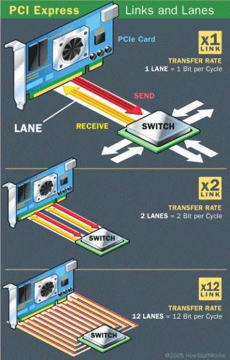
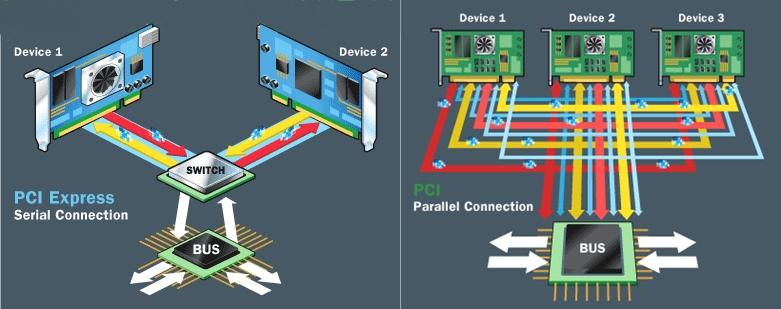

- GT/s 和 GBps 分别表示什么
GT/s 是 Giga Transmission per second的缩写，它表示的是原始速率即每秒能够传输多少bits，其数值等于PCIe总线的时钟频率。而GBps表示有效带宽也即每秒能够传输多少数据，它跟原始速率、编码方案和Lane数量有关。
说到编码方案目前大概有两种，一种是8b/10b，一种是128b/130b。pcie 1.0 和pcie 2.0用的都是第一种编码方案，而pcie 3.0, 4.0, 5.0 用的都是第二种。第一种编码表示的是在PCIe链路上的10 bit中含有8 bit的有效数据也就是说overhead 为20%，而第二种表示PCIe链路上的130 bit中含有128 bit的有效数据，此时的overhead大小在2%。
以pcie 5为例，它的原始速率为32GT/s，那么 PCIe5 x 8的传带宽 = 32GT/s * 8 lans * 8 bits-per-byte x 128/130 encoding x 2（双向通信） 那么总带完在63GBps。
- PCIe lane
PCIe 是全双工的通信总线，一个lane由两对差分信号线，即4根信号线。Lane的数量称为位宽，在一个PCIe cycle，理论上N个lane可同时接收和发送各N个比特信息。

为了让大家更好的理解PCIe lane是怎么工作的，我们可以通过一个现实当中的一个场景来做一下类比。 在现实生活当中，lane就当于我们的高架桥上的车道，而在lane上传输的数据就相当于车道上行驶的汽车。lane越多，处理的流量也就越多。但是这个lane的数量不是无限的，它的数量多少取决于cpu和主板芯片组。
- PCIe x 16, x 8 具体表示什么
大家经常会在Soc 的 spec看到相关的参数，x 后面的数字表示的是lane的数量。目前lane的数量有1、2、4、8、12和16这几种选择。当然目前最高的有32 lanes，而实际当中32的比较少，毕竟 x 16的带宽也足以满足需求。
- pci 和pcie的差异点在哪里
说到pcie，就不能不说一下他的前辈pci(pci-x)。pci全称是peripheral component interconnect, 作为服务器上的外设之间一个标准的互联协议，intel 在1990年提出并在接下来的15年间得到广泛的应用，比如网卡，声卡还有显卡等都是以pci卡的形式插到到当时的主板上。而pcie 全称peripheral component interconnect express，作为pci的继任者，在2001年由intel发布。
pci和pcie最大的不同主要是在工作方式上，pci 链路上的数据是以并行模式进行传输的，而pcie则是以串行的方式进行传输的。在设备连接上，每个pci的设备都是直接连接到pci bus上，大家共享整个跟pci bus的连接。而pcie设备则需要通过一个switch来跟bus进行连接，而每个pcie设备的连接都相互独立的。

在传输带宽上，pci有32位和64位之分，其工作频率也有两种33MHZ和66MHZ。32位的pci其最大传输带宽分别是133MB/s，266MB/s，而64位 pci工作在66MHZ下的传输带宽在532MB/s。pci的带宽除了跟位数相关还是其工作的频率相关，可能有人会说是不是不断的提高pci工作频率就可以把带宽不断的提升了。而实际上完全不是这样，因为pci以并行模式来传输数据虽然效率高但是由于大家都挤在一个通道上，随着你频率的升高pci链路上数据出错率也不断升高，最终的结果就是通道基本不可用。这也是后来提出pcie的原因。相对于pci，pcie的传输带宽根据pcie协议的版本的不同，lane数量不同，它的传输带宽在250GB/s到数十GB/s之间。

在兼容性上，pci既不向前兼容也不向后兼容，也就是说你无法将一个版本的pci 设备插到另外一个版本的pci物理插槽上。而在这一点上，pcie就做的非常好，既能向前兼容也能向后兼容。比如，你能把一个pcie gen3的设备插到pcie gen4的物理slot上；同时你也能把一个pcie gen5的设备插到到gen3的物理slot上。
- pcie 5 具体的使用场景在哪里
在上一篇文章深入解析aws graviton3基本上也提到了，那就是AI/ML。以自动驾驶为例子，一辆汽车平均每天产生的数据包括图像，各种传感器等大约在4TB左右，而这些数据的计算和处理都需要在不同的计算节点之间进行传输。
另外一方面， AI/ML的训练模型的规模基本上在3到4个月就会double一下。而这些海量数据和训练模型的快速增长给数据中心的计算架构也带来巨大压力，比如内存访问，计算节点之间的连接的带宽等。这也就很好的说明了为什么aws graviton3里面为什么直接上pcie5了，以pcie 5 x 16为例，最高能支持128GBps的链路带宽，足以满足AI/ML的需求。